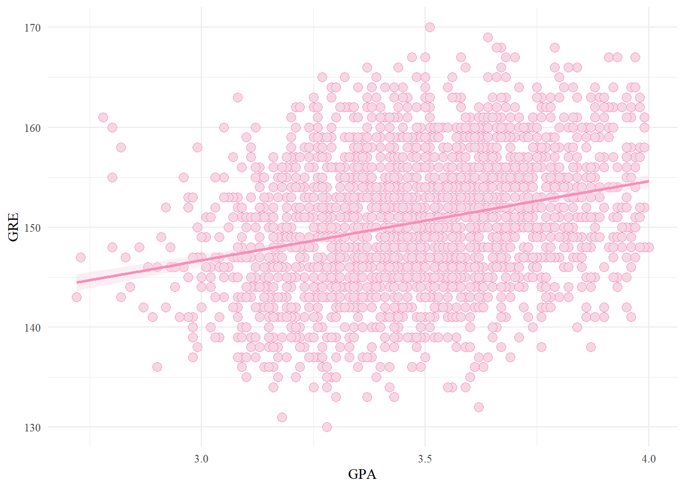
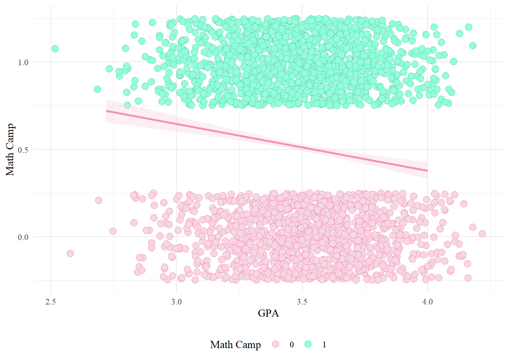
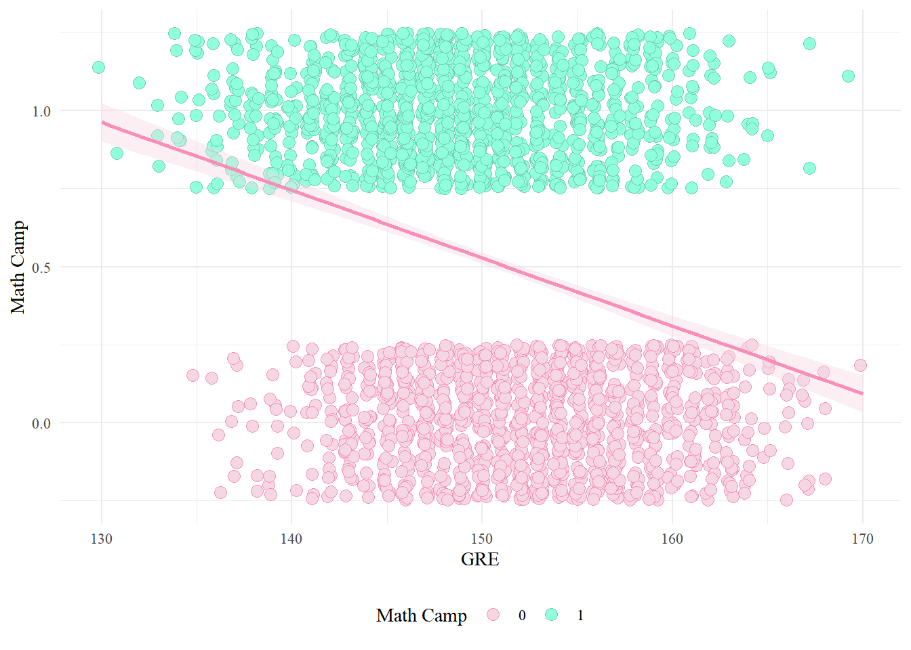
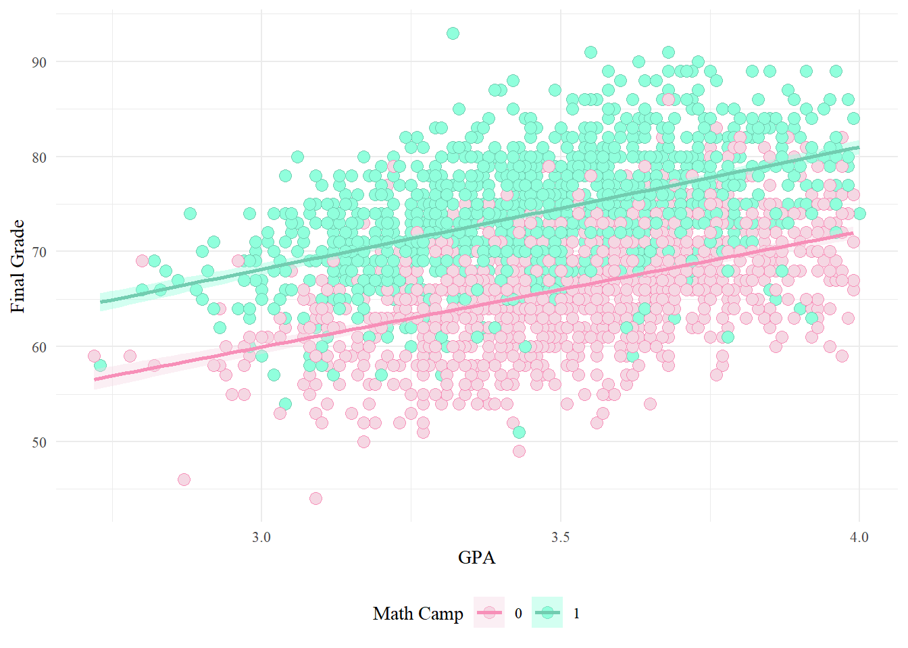
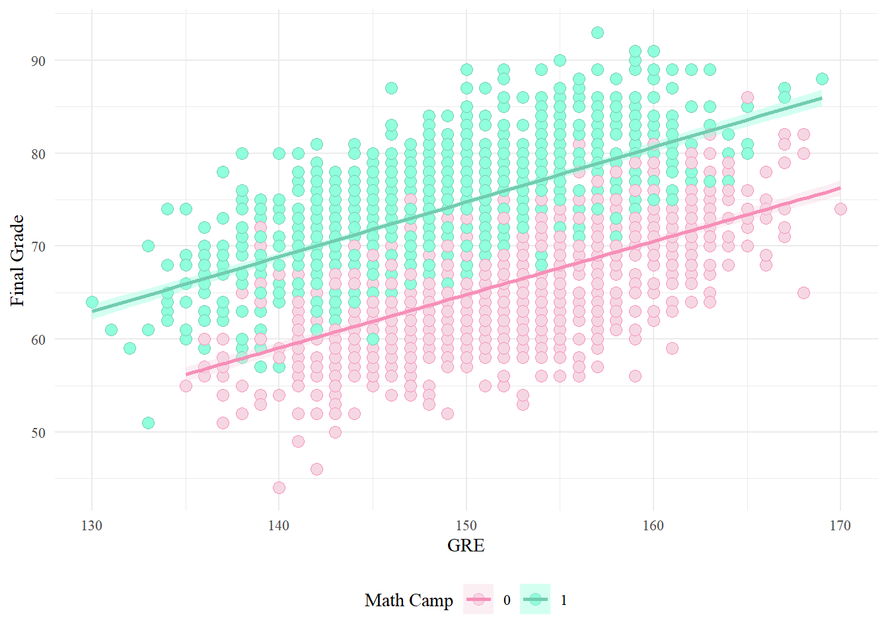
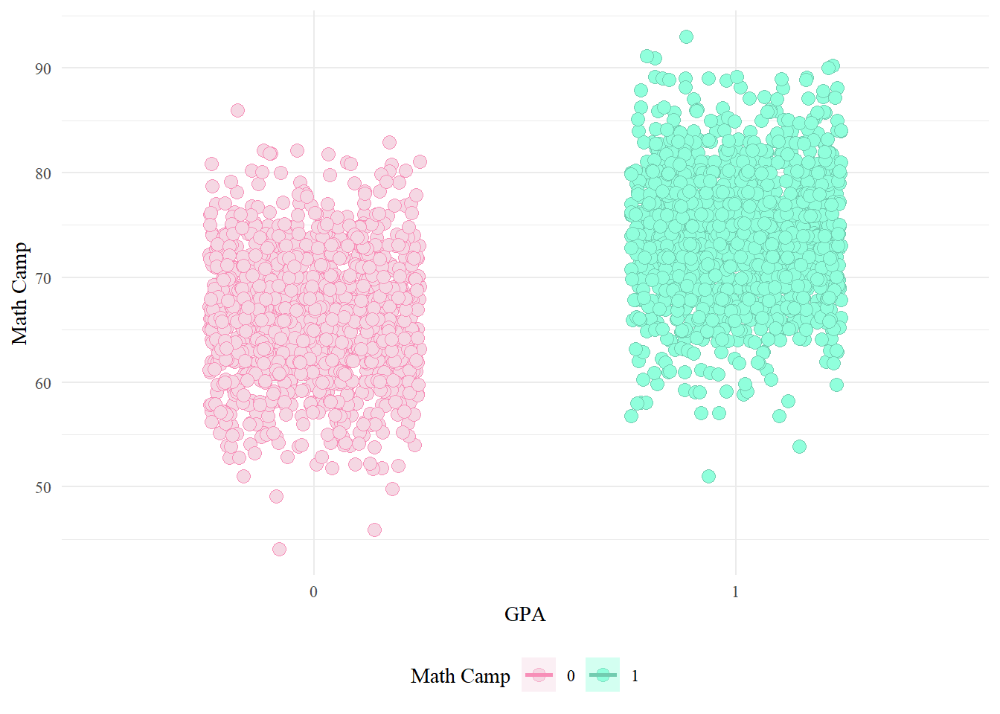

library(tidyverse) # For ggplot, mutate(), filter(), and friends
library(broom) # For converting models to data frames
library(ggdag) # For drawing DAGs
library(scales) # For rescaling data with rescale()
library(truncnorm) # For truncated normal distributions
library(kableExtra)
library(modelsummary)
set.seed(80085) # Make any random stuff be the same every time you run this
# Turn off the message that happens when you use group_by() and summarize()
options(dplyr.summarise.inform = FALSE)
knitr::opts_chunk$set(message = FALSE, warning = FALSE)Many MPA and MPP programs offer a brief math camp in the weeks before students begin their graduate degrees, with the hope that it will help students by more prepared in math-heavy classes like statistics and microeconomics.
You’re interested in evaluating the effectiveness of a hypothetical math camp program. Does attending math camp cause higher grades in statistics classes?
This program is not randomized and it’s not mandatory—anyone can decide to sign up (or not!), which means you have selection bias and confounding to worry about.
You don’t have any data for this, but that’s okay! You can simulate some data and set up the infrastructure for answering this question later with real data.
These two guides will be incredibly helpful for this assignment:
- Generating random numbers: https://evalf21.classes.andrewheiss.com/example/random-numbers/
- The ultimate guide to generating synthetic data for causal inference: https://evalf21.classes.andrewheiss.com/example/synthetic-data/
2: Specify how those nodes are measured
Here’s how these columns are measured:
- GPA: Scale from 1.5 to 4.0 with two decimals (i.e. values like 3.54 are fine). Mostly clustered around 3.5, plus or minus some amount that you decide. You’ll either want to scale down whatever values you create with
rescale(), or usertruncnorm()to constrain the values within the plausible range. - GRE: Scale from 130 to 170 with no decimals (i.e. values like 145.32 are bad). Mostly clustered around 150, plus or minus some amount that you decide. You’ll either want to scale down whatever values you create with
rescale(), or usertruncnorm()to constrain the values within the plausible range. - Math camp: Binary variable. Roughly 50% of students enroll in math camp.
- Final grade: Final exam score in a student’s statistics class. Scale from 0 to 100 with one decimal (i.e. values like 75.2 are fine), mostly clustered around 70 (it’s a hard test), plus or minus some amount that you decide.
3: Specify the relationships between the nodes based on the DAG equations
In the DAG, there are three sets of relationships, or models:
- GPA is associated with GRE scores: Every 1 point increase in GPA (i.e. moving from a 2.0 to a 3.0) increases GRE scores by 10, on average.
- Math camp is associated with undergraduate GPA and GRE scores: Math camp here is a binary variable, so you can’t say things like “every 1 point increase in GRE scores changes math camp by X”. Instead, you’ll want to do something similar to the example for creating an effect in an observational DAG: create a column named
camp_score, have GPA and GRE decrease that score (since people are less likely to enroll in math camp if they have higher GPAs and GRE scores), rescale that math camp score column to be between 0 and 1 to create acamp_probabilitycolumn, and then randomly assign people to math camp based on those probabilities. I don’t care what the size of the GPA and GRE effects are (since they’ll be scaled down and binary-ized anyway)—just make it so that the probability of math camp goes down as GPA and GPA go up. - Final grade is caused by math camp, undergraduate GPA, and GRE scores: Every 1 point increase in GPA increases final test scores by 10 points, on average. Every 1 point increase in GRE scores increase final test scores by 0.5 points. Participating in math camp causes a boost of 10 points. That’s the causal effect you’re building in.
4: Generate data based on the DAG relationships
Generate random columns that stand alone. Generate related columns using regression math. Consider adding random noise. This is an entirely trial and error process until you get numbers that look good. Rely heavily on plots as you try different coefficients and parameters. Optionally rescale any columns that go out of reasonable bounds. If you rescale, you’ll need to tinker with the coefficients you used since the final effects will also get rescaled.
Generate data for 2500 students.
You’ll probably want to rescale columns so you don’t end up with GPAs like 6.3, etc. Rescaling distorts the causal effects you build in, so you probably won’t do something like 10 * camp—it’ll likely need to be higher.
n_ppl <- 2500
math <- tibble(id = 1:n_ppl) %>%
mutate(gpa = round(rtruncnorm(n_ppl, 1.5, 4, 3.5, .25), 2)) %>%
mutate(gre_base = rtruncnorm(n_ppl, 130, 170, 150, 7.5),
gpa_gre = gpa * rnorm(n_ppl, 10, 1),
gre = round(rescale(gre_base + gpa_gre, to = c(130, 170))), 0) %>%
mutate(gpa_camp = gpa * rnorm(n_ppl, -100, 10),
gre_camp = gre * rnorm(n_ppl, -10, .1),
camp_score = rescale(gpa_camp + gre_camp, to = c(0, 1))) %>%
rowwise() %>%
mutate(camp = sample(c(0,1), 1, replace = TRUE,
prob = c(1 - camp_score, camp_score))) %>%
ungroup() %>%
mutate(grade_base = rtruncnorm(n_ppl, 0, 100, 20, 4),
gpa_grade = gpa * rnorm(n_ppl, 10, .5),
gre_grade = (gre - 130) * rnorm(n_ppl, .5, .01),
camp_grade = ifelse(camp == 1, rnorm(n_ppl, 10, 1), 0),
grade = round(grade_base + gpa_grade + gre_grade + camp_grade), 1) %>%
select(gpa, gre, camp, grade)
summary(math) gpa gre camp grade
Min. :2.720 Min. :130.0 Min. :0.000 Min. :44.00
1st Qu.:3.320 1st Qu.:146.0 1st Qu.:0.000 1st Qu.:65.00
Median :3.480 Median :150.0 Median :1.000 Median :70.00
Mean :3.484 Mean :150.5 Mean :0.516 Mean :70.23
3rd Qu.:3.652 3rd Qu.:155.0 3rd Qu.:1.000 3rd Qu.:75.00
Max. :4.000 Max. :170.0 Max. :1.000 Max. :93.00 5: Verify all relationships with plots and models
Make sure the relationships look good. GPA and GRE should be related to each other. Higher values of GPA and GRE should decrease the likelihood of math camp. GPA, GRE, and math camp should all be positively related with final grades.
math %>%
ggplot(aes(gpa, gre)) +
geom_point(pch = 21, size = 3, color = "#F78FB8", fill = "#F5D7E3") +
geom_smooth(method = "lm", color = "#F78FB8", fill = "#F5D7E3") +
labs(x = "GPA",
y = "GRE") +
theme_minimal() +
theme(text = element_text(family = "serif"))
math %>%
ggplot(aes(gpa, camp, color = factor(camp), fill = factor(camp))) +
geom_point(pch = 21, size = 3,
position = position_jitter(width = 0.25, height = 0.25, seed = 1234)) +
geom_smooth(method = "lm", color = "#F78FB8", fill = "#F5D7E3") +
scale_color_manual(values = c("#F78FB8","#72CCB0")) +
scale_fill_manual(values = c("#F5D7E3","#90FFDC")) +
labs(x = "GPA",
y = "Math Camp",
color = "Math Camp",
fill = "Math Camp") +
theme_minimal() +
theme(legend.position = "bottom",
text = element_text(family = "serif"))
math %>%
ggplot(aes(gre, camp, color = factor(camp), fill = factor(camp))) +
geom_point(pch = 21, size = 3,
position = position_jitter(width = 0.25, height = 0.25, seed = 1234)) +
geom_smooth(method = "lm", color = "#F78FB8", fill = "#F5D7E3") +
scale_color_manual(values = c("#F78FB8","#72CCB0")) +
scale_fill_manual(values = c("#F5D7E3","#90FFDC")) +
labs(x = "GRE",
y = "Math Camp",
color = "Math Camp",
fill = "Math Camp") +
theme_minimal() +
theme(legend.position = "bottom",
text = element_text(family = "serif"))
math %>%
ggplot(aes(gpa, grade, color = factor(camp), fill = factor(camp))) +
geom_point(pch = 21, size = 3) +
geom_smooth(method = "lm") +
scale_color_manual(values = c("#F78FB8","#72CCB0")) +
scale_fill_manual(values = c("#F5D7E3","#90FFDC")) +
labs(x = "GPA",
y = "Final Grade",
color = "Math Camp",
fill = "Math Camp") +
theme_minimal() +
theme(legend.position = "bottom",
text = element_text(family = "serif"))
math %>%
ggplot(aes(gre, grade, color = factor(camp), fill = factor(camp))) +
geom_point(pch = 21, size = 3) +
geom_smooth(method = "lm") +
scale_color_manual(values = c("#F78FB8","#72CCB0")) +
scale_fill_manual(values = c("#F5D7E3","#90FFDC")) +
labs(x = "GRE",
y = "Final Grade",
color = "Math Camp",
fill = "Math Camp") +
theme_minimal() +
theme(legend.position = "bottom",
text = element_text(family = "serif"))
math %>%
ggplot(aes(factor(camp), grade, color = factor(camp), fill = factor(camp))) +
geom_point(pch = 21, size = 3,
position = position_jitter(width = 0.25, height = 0.25, seed = 1234)) +
geom_smooth(method = "lm") +
scale_color_manual(values = c("#F78FB8","#72CCB0")) +
scale_fill_manual(values = c("#F5D7E3","#90FFDC")) +
labs(x = "GPA",
y = "Math Camp",
color = "Math Camp",
fill = "Math Camp") +
theme_minimal() +
theme(legend.position = "bottom",
text = element_text(family = "serif"))
6: Try it out!
See if you can find the effect. Run two models:
grade ~ camp: This is the naive, unadjusted, correlation-is-not-causation estimate. It’s wrong.grade ~ camp + gpa + gre: This is the adjusted estimate. Backdoors have been closed and the coefficient forcampshould be the causal effect. It should be around 10.- (If you want to be super cool, adjust for GPA and GRE with inverse probability weighting too to see if the ATE for
campstill holds. This is entirely optional.)
model1 <- lm(grade ~ camp, data = math)
model2 <- lm(grade ~ camp + gpa + gre, data = math)
both <- modelsummary(list("Math Camp" = model1,
"+ Controls" = model2),
coef_rename = c(camp = "Math Camp",
gpa = "GPA",
gre = "GRE"),
output = "kableExtra",
estimate = "{estimate}{stars}",
statistic = "statistic",
fmt = 2,
gof_omit = "IC|Log|Adj|p\\.value|statistic|se_type|F|RMSE") %>%
row_spec(c(1,3,5,7), background = "#8DE4FF")
both| Math Camp | + Controls | |
|---|---|---|
| (Intercept) | 66.20*** | −41.01*** |
| (380.84) | (−18.04) | |
| Math Camp | 7.80*** | 10.19*** |
| (32.24) | (55.69) | |
| GPA | 9.03*** | |
| (23.09) | ||
| GRE | 0.50*** | |
| (34.32) | ||
| Num.Obs. | 2500 | 2500 |
| R2 | 0.294 | 0.631 |
7: Save the data
Make a version of your fake data that removes all the intermediate columns you made. Save the final clean data as a CSV file with write_csv().
write_csv(math, "math.csv")